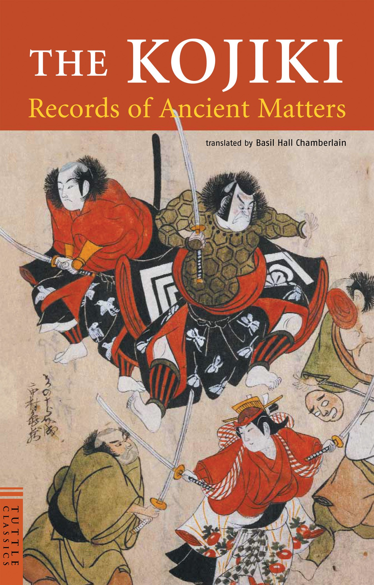
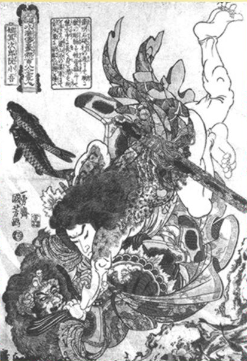
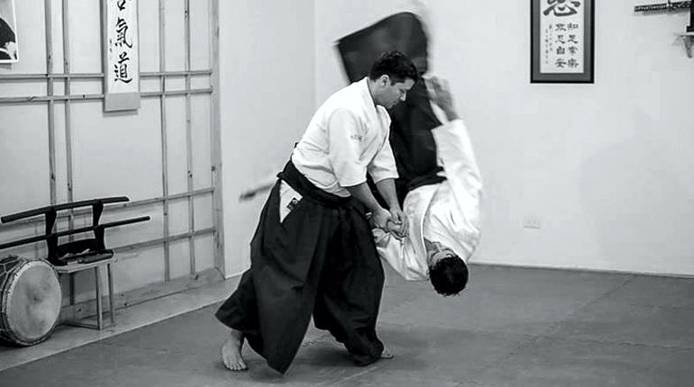
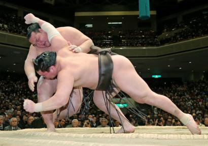
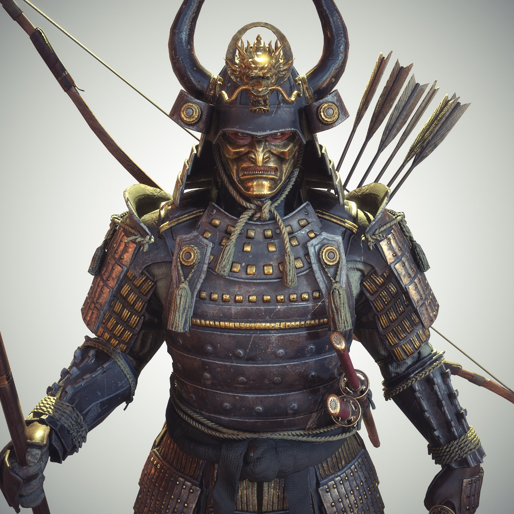
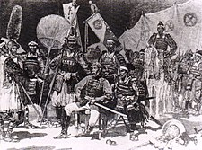
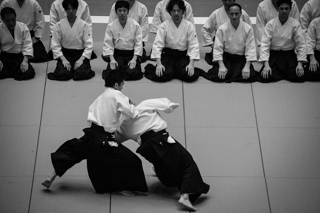
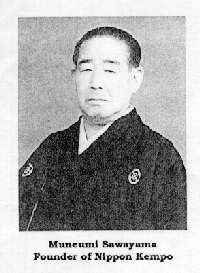
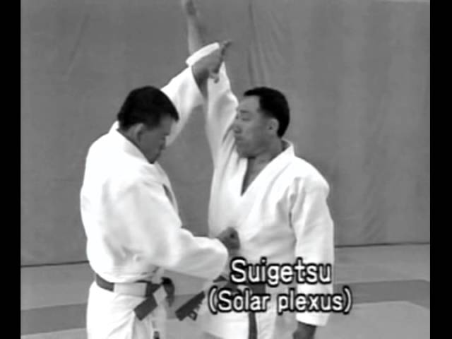
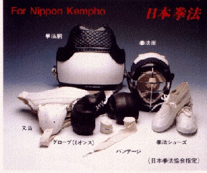

Historia del Nippon kempo
La búsqueda de Nippon Kempo se remota al origen
del antiguo Sumo o Kodai Sumo, de acuerdo al libro
de."KOJIKI" el cual contiene la historia y mitología
de Japón, escrito por Yasumaro Ohno, año 712 d.c.,
se enfrentaron Takeminakata no Kami y Takemikazuchi
no Kami, este ultimo aplico una técnica de proyección
con llave mediante la cual derribo a Takeminakata no
Kami.

Otro libro que contiene la historia y mitología de
Japón, 720 d.c., escrito por Nihon Syoki, narra el
enfrentamiento de Nomino Sukune contra Taimano Kahaya,
en presencia del emperador; en dicho enfrentamiento
comenzaron los dos a combatir utilizando patadas y
proyecciones, por ultimo lo tiro al piso Taimano Kahaya,
matándolo rompiéndole las costillas, en aquel tiempo
esta técnica se llamaba "SUMAI", esta técnica es muy
peligrosa y diferente al actual "SUMO".

El Sumai en aquel tiempo era una técnica muy parecida
al Nippon Kempo. En el año 726 d.c.,la técnica del Sumai
era demasiado peligrosa, por lo que se prohibieron las
técnicas de contacto y se corrigieron ciertas técnicas
permitidas, con esta nueva disciplina se da origen al
actual Sumo. Con el Sumai se dio origen al Jujutsu, y
de esté, se crearon las siguientes disciplinas: Judo,
Aikido y Nippon Kempo.

Durante el periodo Nara (710-794), el Sumo estaba
considerado como la protección de la familia imperial,
instituyéndose el Festival Sintorismo, que consistía en
competencias frente al emperador, los ganadores pasaban
a formar parte de la guardia imperial. Pero, durante el
periodo Heian (794-1192), el Sumo se impuso como un
deporte de diversión muy popular. Sin embargo el emperador
prefrió mantener la técnica antigua del Sumai, como un
símbolo de la fuerza militar.

Al llegar la época de Kamakura (1192-1333), la mentalidad
dominante era la de Bushi (Samurai) fuerte y disciplinado,
adaptándose al Sumai.
En las guerras los Samuráis atacaban armados y con armaduras,
sin embargo en muchas ocasiones peleaban cuerpo a cuerpo.
La técnica Sumai era muy eficiente en la guerra, por lo cual
evoluciono y se difundió. El Sumo en las ciudades grandes
(Bushi Kaykyu), bajo el interés pero en los pueblos y provincias
se difundió más. Durante el periodo de Muromachi y Azuchi
Momoyama (1336-1603), el Sumai fue muy popular en Japón, en la
cuestión política y social.

El sumo también se fue difundiendo y formándose con más
estabilidad. Después de un periodo de guerra interna en Japón.
En la época Edo (1603-1868), Japón comenzó a tener una vida
tranquila.
Los samuráis en el entrenamiento de las Artes Marciales se
concentraron en el Kendo, sin embargo, siempre existe la
necesidad de aprender técnicas con armas o sin armas. Un chino
llamado Chin Guen Pin, quien emigró a Japón según en 1621.
Años más tarde en 1628, les enseño movimientos y técnicas
chinas a tres personas Fukui, Isogal y Miura, quienes poco
después fundaron tres academias de artes marciales. Parece ser
que estas técnicas influyeron en otras artes marciales de Japón
(Jujutsu).

Durante el periodo de Edo, había mas de cien academias de
diferentes estilos de artes marciales. En el año de 1876, el
nuevo gobierno de Japón prohibió al pueblo portar espadas o
cualquier otra arma, para traer tranquilidad entre la población,
por lo que las personas no necesitaban aprender artes marciales o
defensa personal, aunque algunas personas si llegaban a practicar.
Sin embargo el ejercito japonés y la policía por necesidad
practicaban las artes marciales.

El Maestro Takamaro Kuroyama (1895 - 1977) perteneció a la cuarta
generación de la escuela de Artes Marciales (Budo Senmon Gako). Fue
maestro de judo en la policía de Osaka y presidente de Koka-Kai. Por
el año de 1925, el maestro Kuroyama opinó y lamentó que se estaba
olvidando esta técnica muy efectiva de golpes y patadas (Atemi-waza),
golpe de contacto. El maestro Takamaro Kuroyama le solicitó al Masaru
Sawayama (1906-1977), quien era estudiante de la universidad y quien
estaba practicando judo con el maestro Kuroyama, que realizara e
investigara la técnica de Atemi-waza con un entrenamiento de técnicas
con seguridad.

Sin embargo existían ciertos problemas. El arte marcial japonés Atemi-waza,
tiene como principal entrenamiento las Katas, las cuales tienen numerados
sus movimientos con ataques y defensas; utilizando la técnica aplicada
también con pareja. El golpe de contacto es muy peligroso, es necesario el
entrenamiento de Katas, aunque los movimientos de Katas se esquivan a otro
lado y se realizan movimientos más bonitos para exhibiciones. Es necesario
buscar un entrenamiento más libre, utilizando técnicas de Atemi-waza.
Debido a que la pura Kata era insuficiente para recrear la técnica real, el
profesor Sawayama y sus seguidores en 1930, crearon tres entrenamientos de
combate:
1. YAKUSOKU KUMITE (ejemplo CHIGEKI NO KATA).
2. JYU KUMITE (ejemplo CHIGEKI NO KATA sin numeración).
3. SHINKEN KUMITE (ejemplo combate libre como el actual pero sin Bogu.

En el año de 1932, se reunieron unos cien practicantes de esta disciplina.
Dentro de Koka-Kai, y le pusieron el nombre de "DAI NIPPON KEMPO", formándose
el grupo "Dai Nippon Kempo Kai" como asociación de Gran Nippon Kempo, nombrando
como presidente y director general al maestro Masaru Sawayama. DAI NIPPON KEMPO
Aunque se formó la técnica, la asociación y cierto equipo protector, siempre se
siguió renovando la técnica y el equipo protector mejoró de calidad en el año
de 1934, comenzándose a entrenar con más confianza y libertad esta técnica, como
en el actual Nippon Kempo.

El principal objetivo del Nippon Kempo fue buscar y resucitar la técnica de
contacto (Atemi-waza). Ya que si se omite la técnica de pelea real, o sea de
contacto, es como por ejemplo, quitarle las uñas y los dientes a un león.
Así fue como, con estos pensamientos, se comenzó a crear y/o inventar como
entrenar y combatir, así como, idear el equipo protector, para así poder
entrenar libremente logrando la nueva técnica del actual Nippon Kempo: un
estilo propio integrado de la técnica de combate.